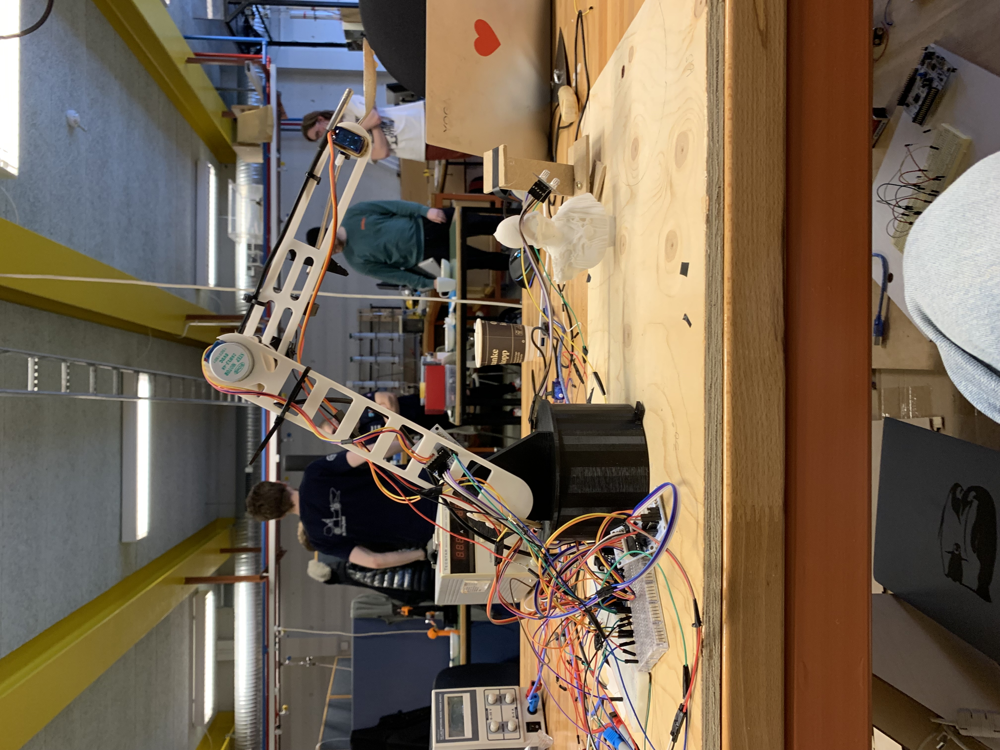
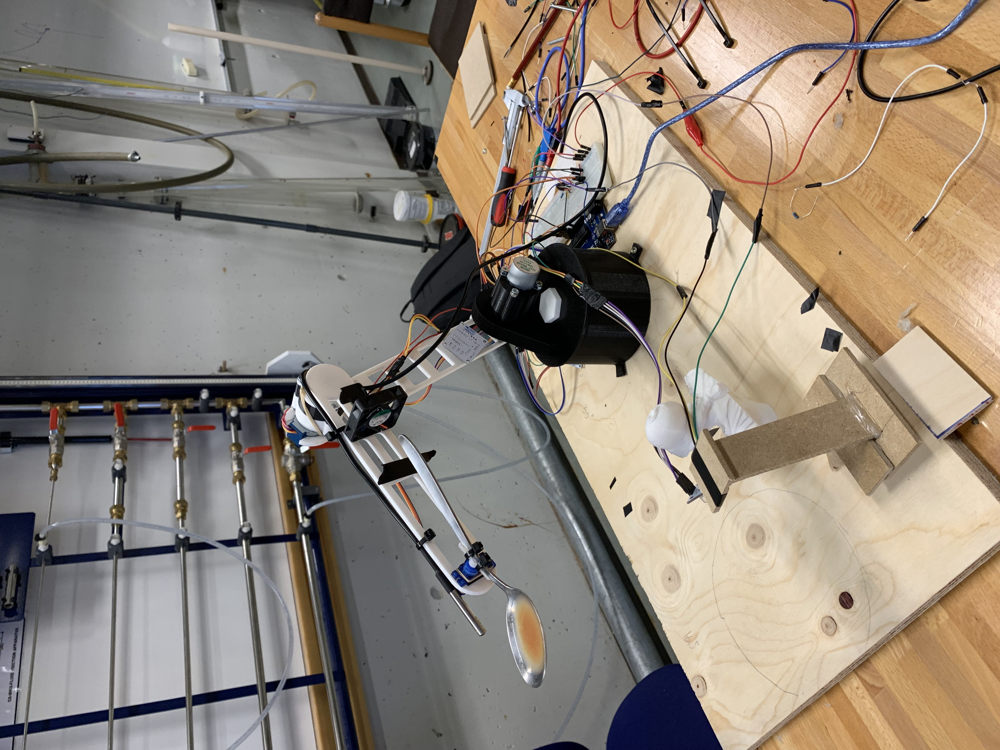
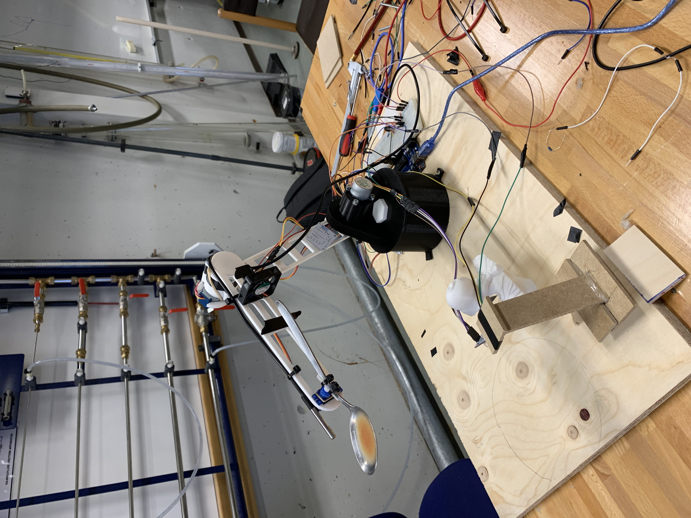

Soup-serving robot
All of the parts of the robot were 3D-printed, even the gearbox which has a ratio of about 17:1. There are two servo motors responsible for the motion of the arm and base. A single stepper controls the angle of the spoon. There is a thermometer on the tip of the arm reading in the soup's temperature, if the soup is too hot, the fan on the robot's arm will turn on until the soup is safe to consume. There is also a color sensor resting on the little statue which is able to report the color of the soup. The circuitry was done from scratch using a breaboard. The logic was implemented with a single Arduino UNO in Arduino C. The robot requires about 12 Volts.

 
